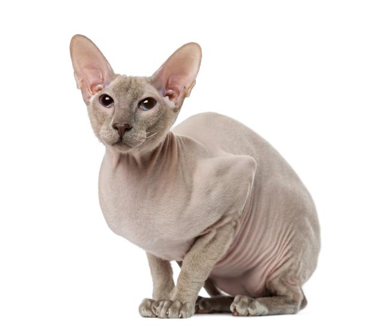

Son originarios de Rusia, donde en los años 90 se cruzaron gatos orientales de pelo corto con gatos siameses y una determinada variedad de gatos sphynx, pues las intenciones de la criadora que realizó dichos cruces era obtener un gato como los sphynx pero de estilo oriental. No pasó mucho tiempo hasta que en 1994 los cruces dieron como fruto a unos curiosos gatos carentes de pelo que eran como se esperaba.

Son felinos de cuerpo mediano y estilizado, con unas patas muy largas, al igual que su cola, sin embargo, son bastante robustos y resistentes. Su peso oscila entre los 3 y los 5 kilogramos y tienen una esperanza de vida de 12 a 16 años aproximadamente. Siguiendo con las características del gato peterbald, podemos decir que la cabeza es fina y muy proporcionada al resto del cuerpo, con unas grandes y triangulares orejas, y una nariz estrecha y larga. Enmarcados en su elegante cara, sus ojos, medianos y no prominentes, son de formas almendradas y colores que armonizan con el color del cuerpo.

Es normalmente muy afectuosa y de temperamento tranquilo. Adora que sus humanos pasen tiempo en su compañía y les proporcionen mimos y cariños. Por ello, no son gatos solitarios y necesitan el contacto frecuente con la gente. Por el comportamiento del peterbald, este se lleva bien tanto con niños como con otros animales, incluso con los perros. Además, se adapta con facilidad a diversos hogares, como casas o apartamentos, por lo que es un compañero perfecto para prácticamente cualquier tipo de hogar. Debido a su paciencia y carácter equilibrado, es un gato ideal para los niños, de manera que siempre que ambos estén educados para tratarse con respeto mutuo serán unos compañeros ideales el uno para el otro.
No necesita cepillados constantes. Eso sí, se aconseja mantener al gato peterbald siempre limpio, extremando las medidas en cuanto a su aseo por medio de baños o toallitas especiales, además de usar productos específicos para mantener su piel hidratada, ya que esta es bastante sensible. Por esta misma carencia de pelo es necesario prestar atención a las temperaturas, pues es un felino muy sensibles tanto al frío como al calor. Aunque a simple vista los cuidados del gato peterbald parezcan sencillos, lo cierto es que es fundamental prestar mucha atención a su piel. Como decimos, es mucho más sensible que la de otras razas por el hecho de estar más expuesta por la falta de un manto que la proteja. Así, si nuestro peterbald tendrá acceso al exterior, por ejemplo, durante los meses de más calor será imprescindible aplicar crema solar para gatos, mientras que en las épocas de frío tendremos que abrigarlo.

En general, sanos y fuertes, por lo que solo necesitan unas pequeñas atenciones para mantener su buen estado de salud. Hemos de prestar atención a que nuestro felino esté correctamente vacunado y desparasitado, así como mantener su piel hidratada para evitar irritaciones y demás afecciones cutáneas. También hemos de ser cuidadosos si vivimos en climas fríos, pues puede que si las temperaturas son demasiado bajas sea necesario abrigar a nuestro peterbald, como ya hemos apuntado. Al tratarse de una raza tan joven, no existen enfermedades del gato peterbald reconocidas más allá de los posibles problemas de piel mencionados. Al tener las orejas más grandes, también es importante mantener su higiene para evitar infecciones, igual que vaciar sus glándulas anales, cortar sus uñas y limpiar sus ojos.